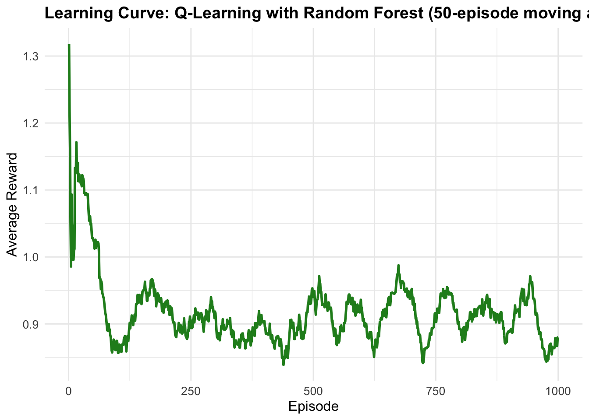

Chapter 7 Beyond Linear Models: Q-Learning with Random Forest Function Approximation in R
7.1 Introduction
While linear function approximation provides a solid foundation for scaling reinforcement learning beyond tabular methods, it assumes a linear relationship between features and Q-values. Real-world problems often exhibit complex, non-linear patterns that linear models cannot capture effectively. This post extends our previous exploration by implementing Q-Learning with Random Forest function approximation, demonstrating how ensemble methods can learn intricate state-action value relationships while maintaining interpretability and robust generalization.
Random Forests offer several advantages over linear approximation: they handle non-linear relationships naturally, provide built-in feature importance measures, resist overfitting through ensemble averaging, and require minimal hyperparameter tuning. Weâll implement this approach using the same 10-state, 2-action environment, comparing the learned policies and examining the unique characteristics of tree-based function approximation.
Random Forest function approximation replaces the linear parameterization with an ensemble of decision trees. Instead of:
\[ Q(s, a; \theta) = \phi(s, a)^T \theta \]
we now approximate the action-value function as:
\[ Q(s, a) = \frac{1}{B} \sum_{b=1}^{B} T_b(\phi(s, a)) \]
where \(T_b\) represents the \(b\)-th tree in the ensemble, \(B\) is the number of trees, and \(\phi(s, a)\) is our feature representation. Each tree \(T_b\) is trained on a bootstrap sample of the data with random feature subsets at each split, providing natural regularization and variance reduction.
7.1.1 Q-Learning with Random Forest Approximation
The Q-Learning update process with Random Forest approximation involves:
- Experience Collection: Gather state-action-reward-next state tuples \((s, a, r, s')\)
- Target Computation: Calculate TD targets \(y = r + \gamma \max_{a'} Q(s', a')\)
- Model Training: Fit Random Forest regressor to predict \(Q(s, a)\) from features \(\phi(s, a)\)
- Policy Update: Use updated model for epsilon-greedy action selection
Unlike linear methods with continuous parameter updates, Random Forest approximation requires periodic model retraining on accumulated experience. This batch-like approach trades computational efficiency for modeling flexibility.
For our implementation, we use a simple concatenation of one-hot encoded state and action vectors:
\[ \phi(s, a) = [e_s^{(state)} \; || \; e_a^{(action)}] \]
where \(e_s^{(state)}\) is a one-hot vector for state \(s\) and \(e_a^{(action)}\) is a one-hot vector for action \(a\). This encoding allows trees to learn complex interactions between states and actions while maintaining interpretability.
7.1.2 Comparison with Previous Methods
| Aspect | Tabular Q-Learning | Linear Function Approximation | Random Forest Function Approximation |
|---|---|---|---|
| Model Complexity | None; direct storage | Linear combinations | Non-linear ensemble |
| Feature Interactions | Implicit | None (unless engineered) | Automatic discovery |
| Interpretability | Full | Moderate (weights) | High (tree structures) |
| Training | Online updates | Gradient descent | Batch retraining |
| Overfitting Risk | None | Low | Low (ensemble averaging) |
| Computational Cost | \(O(1)\) lookup | \(O(d)\) linear algebra | \(O(B \cdot \log n)\) prediction |
7.2 R Implementation
Our implementation builds upon the previous environment while introducing Random Forest-based Q-value approximation. The key innovation lies in accumulating training examples and periodically retraining the forest to incorporate new experience.
## randomForest 4.7-1.2## Type rfNews() to see new features/changes/bug fixes.##
## Attaching package: 'randomForest'## The following object is masked from 'package:gridExtra':
##
## combine## The following object is masked from 'package:ggplot2':
##
## marginlibrary(ggplot2)
# Environment setup (same as previous implementation)
n_states <- 10
n_actions <- 2
gamma <- 0.9
terminal_state <- n_states
# Environment: transition and reward models
set.seed(42)
transition_model <- array(0, dim = c(n_states, n_actions, n_states))
reward_model <- array(0, dim = c(n_states, n_actions, n_states))
for (s in 1:(n_states - 1)) {
transition_model[s, 1, s + 1] <- 0.9
transition_model[s, 1, sample(1:n_states, 1)] <- 0.1
transition_model[s, 2, sample(1:n_states, 1)] <- 0.8
transition_model[s, 2, sample(1:n_states, 1)] <- 0.2
for (s_prime in 1:n_states) {
reward_model[s, 1, s_prime] <- ifelse(s_prime == n_states, 1.0, 0.1 * runif(1))
reward_model[s, 2, s_prime] <- ifelse(s_prime == n_states, 0.5, 0.05 * runif(1))
}
}
transition_model[n_states, , ] <- 0
reward_model[n_states, , ] <- 0
# Sampling function
sample_env <- function(s, a) {
probs <- transition_model[s, a, ]
s_prime <- sample(1:n_states, 1, prob = probs)
reward <- reward_model[s, a, s_prime]
list(s_prime = s_prime, reward = reward)
}
# Feature encoding for Random Forest
encode_features <- function(s, a, n_states, n_actions) {
state_vec <- rep(0, n_states)
action_vec <- rep(0, n_actions)
state_vec[s] <- 1
action_vec[a] <- 1
return(c(state_vec, action_vec))
}
n_features <- n_states + n_actions
# Q-Learning with Random Forest function approximation
q_learning_rf <- function(episodes = 1000, epsilon = 0.1, retrain_freq = 10, min_samples = 50) {
# Initialize training data storage
rf_data_x <- matrix(nrow = 0, ncol = n_features)
rf_data_y <- numeric(0)
rf_model <- NULL
rewards <- numeric(episodes)
for (ep in 1:episodes) {
s <- sample(1:(n_states - 1), 1) # Start from non-terminal state
episode_reward <- 0
while (TRUE) {
# Predict Q-values for all actions
q_preds <- sapply(1:n_actions, function(a) {
x <- encode_features(s, a, n_states, n_actions)
if (!is.null(rf_model)) {
predict(rf_model, as.data.frame(t(x)))
} else {
runif(1) # Random initialization
}
})
# Epsilon-greedy action selection
a <- if (runif(1) < epsilon) {
sample(1:n_actions, 1)
} else {
which.max(q_preds)
}
# Take action and observe outcome
out <- sample_env(s, a)
s_prime <- out$s_prime
r <- out$reward
episode_reward <- episode_reward + r
# Compute TD target
q_next <- if (s_prime == terminal_state) {
0
} else {
max(sapply(1:n_actions, function(a_) {
x_next <- encode_features(s_prime, a_, n_states, n_actions)
if (!is.null(rf_model)) {
predict(rf_model, as.data.frame(t(x_next)))
} else {
0
}
}))
}
target <- r + gamma * q_next
# Store training example
x <- encode_features(s, a, n_states, n_actions)
rf_data_x <- rbind(rf_data_x, x)
rf_data_y <- c(rf_data_y, target)
# Retrain Random Forest periodically
if (nrow(rf_data_x) >= min_samples && ep %% retrain_freq == 0) {
rf_model <- randomForest(
x = as.data.frame(rf_data_x),
y = rf_data_y,
ntree = 100,
nodesize = 5,
mtry = max(1, floor(n_features / 3))
)
}
if (s_prime == terminal_state) break
s <- s_prime
}
rewards[ep] <- episode_reward
}
# Derive final policy
policy <- sapply(1:(n_states-1), function(s) {
if (!is.null(rf_model)) {
q_vals <- sapply(1:n_actions, function(a) {
x <- encode_features(s, a, n_states, n_actions)
predict(rf_model, as.data.frame(t(x)))
})
which.max(q_vals)
} else {
1 # Default action
}
})
list(model = rf_model, policy = c(policy, NA), rewards = rewards,
training_data = list(x = rf_data_x, y = rf_data_y))
}
# Run Q-Learning with Random Forest approximation
set.seed(42)
rf_result <- q_learning_rf(episodes = 1000, epsilon = 0.1, retrain_freq = 10)
rf_policy <- rf_result$policy
rf_rewards <- rf_result$rewards
# Create policy visualization
policy_df <- data.frame(
State = 1:n_states,
Policy = rf_policy,
Algorithm = "Q-Learning RF"
)
policy_plot_rf <- ggplot(policy_df[1:(n_states-1), ], aes(x = State, y = Policy)) +
geom_point(size = 4, color = "forestgreen") +
geom_line(color = "forestgreen", linewidth = 1) +
theme_minimal() +
labs(
title = "Policy from Q-Learning with Random Forest Approximation",
x = "State",
y = "Action"
) +
scale_x_continuous(breaks = 1:n_states) +
scale_y_continuous(breaks = 1:n_actions, labels = c("Action 1", "Action 2"), limits = c(0.5, 2.5)) +
theme(
plot.title = element_text(size = 14, face = "bold"),
axis.title = element_text(size = 12),
axis.text = element_text(size = 10)
)
# Compare cumulative rewards with moving average
rewards_smooth <- numeric(length(rf_rewards))
window_size <- 50
for (i in 1:length(rf_rewards)) {
start_idx <- max(1, i - window_size + 1)
rewards_smooth[i] <- mean(rf_rewards[start_idx:i])
}
reward_df_rf <- data.frame(
Episode = 1:1000,
Reward = rewards_smooth,
Algorithm = "Q-Learning RF"
)
reward_plot_rf <- ggplot(reward_df_rf, aes(x = Episode, y = Reward)) +
geom_line(color = "forestgreen", linewidth = 1) +
theme_minimal() +
labs(
title = "Learning Curve: Q-Learning with Random Forest (50-episode moving average)",
x = "Episode",
y = "Average Reward"
) +
theme(
plot.title = element_text(size = 14, face = "bold"),
axis.title = element_text(size = 12),
axis.text = element_text(size = 10)
)
# Display plots
print(policy_plot_rf)
# Feature importance analysis
if (!is.null(rf_result$model)) {
importance_df <- data.frame(
Feature = c(paste("State", 1:n_states), paste("Action", 1:n_actions)),
Importance = importance(rf_result$model)[, 1]
)
importance_plot <- ggplot(importance_df, aes(x = reorder(Feature, Importance), y = Importance)) +
geom_col(fill = "forestgreen", alpha = 0.7) +
coord_flip() +
theme_minimal() +
labs(
title = "Feature Importance in Random Forest Q-Function",
x = "Feature",
y = "Importance (Mean Decrease in MSE)"
) +
theme(
plot.title = element_text(size = 14, face = "bold"),
axis.title = element_text(size = 12),
axis.text = element_text(size = 10)
)
print(importance_plot)
}## Random Forest Model Summary:## Number of trees: 100## Training examples: 3040## Final OOB error: 0.02695277Environment Setup
# Environment setup (same as previous implementation)
n_states <- 10
n_actions <- 2
gamma <- 0.9
terminal_state <- n_statesThis chunk defines the basic parameters of the reinforcement learning problem.
n_states <- 10: The âworldâ or âgameâ has 10 distinct states.n_actions <- 2: In any state, the agent can choose between 2 possible actions.gamma <- 0.9: This is the discount factor. It determines how much the agent values future rewards. A value of 0.9 means a reward received in the next step is worth 90% of a reward received now.terminal_state <- n_states: State 10 is designated as the âendâ state. When the agent reaches this state, the âepisodeâ (one attempt) is over.
Environment Model Definition
# Environment: transition and reward models
set.seed(42)
transition_model <- array(0, dim = c(n_states, n_actions, n_states))
reward_model <- array(0, dim = c(n_states, n_actions, n_states))
for (s in 1:(n_states - 1)) {
 transition_model[s, 1, s + 1] <- 0.9
 transition_model[s, 1, sample(1:n_states, 1)] <- 0.1
 transition_model[s, 2, sample(1:n_states, 1)] <- 0.8
 transition_model[s, 2, sample(1:n_states, 1)] <- 0.2
 for (s_prime in 1:n_states) {
  reward_model[s, 1, s_prime] <- ifelse(s_prime == n_states, 1.0, 0.1 * runif(1))
  reward_model[s, 2, s_prime] <- ifelse(s_prime == n_states, 0.5, 0.05 * runif(1))
}
}
transition_model[n_states, , ] <- 0
reward_model[n_states, , ] <- 0This chunk builds the ârulesâ of the environment, which the agent will interact with.
set.seed(42): Ensures that the random elements (like which state to jump to) are the same every time the code is run, making the results reproducible.transition_model&reward_model: These 3D arrays define the environment.transition_model[s, a, s_prime]stores the probability of moving tos_prime(next state) if you take actionain states.reward_model[s, a, s_prime]stores the reward you get for that specific transition.
- The Loop: This populates the arrays.
- Action 1: Has a 90% chance of moving to the next sequential state (
s + 1) and a 10% chance of moving to a random state. - Action 2: Is highly random, with an 80% chance of moving to one random state and a 20% chance of moving to another.
- Rewards: The agent gets a large reward (1.0 or 0.5) if it lands in the terminal state (
s_prime == n_states). Otherwise, it gets a small, random reward.
- Action 1: Has a 90% chance of moving to the next sequential state (
- Terminal State: The last two lines ensure that if the agent is in the terminal state (10), all actions lead nowhere (
0probability) and give no reward (0reward).
Sampling Function
# Sampling function
sample_env <- function(s, a) {
 probs <- transition_model[s, a, ]
 s_prime <- sample(1:n_states, 1, prob = probs)
 reward <- reward_model[s, a, s_prime]
 list(s_prime = s_prime, reward = reward)
}This function acts as the simulator. The Q-learning agent doesnât get to see the full transition_model. Instead, it just gives a state (s) and an action (a) to this function. The function then:
- Looks up the probabilities for all possible next states (
probs). - Uses
sample()to pick one next state (s_prime) based on those probabilities. - Finds the reward for that actual transition.
- Returns the
s_primeandrewardto the agent.
Feature Encoding
# Feature encoding for Random Forest
encode_features <- function(s, a, n_states, n_actions) {
 state_vec <- rep(0, n_states)
 action_vec <- rep(0, n_actions)
 state_vec[s] <- 1
 action_vec[a] <- 1
 return(c(state_vec, action_vec))
}
n_features <- n_states + n_actionsThis is a critical step for using a Random Forest. The model doesnât understand âstate 5â as a concept. It needs numerical features.
- This function performs one-hot encoding.
- It creates a vector of
n_states(10) zeros and puts a1at the position corresponding to the current states. (e.g., state 3 becomes[0, 0, 1, 0, 0, 0, 0, 0, 0, 0]). - It does the same for the action
a. (e.g., action 2 becomes[0, 1]). - It combines them into a single feature vector of length 12 (10+2). This vector is what the Random Forest will use as input.
Q-Learning Function Definition
# Q-Learning with Random Forest function approximation
q_learning_rf <- function(episodes = 1000, epsilon = 0.1, retrain_freq = 10, min_samples = 50) {
# ... (function body) ...
}This defines the main function that runs the entire learning process.
episodes = 1000: The agent will run 1000 full âgamesâ or âattempts.âepsilon = 0.1: This controls the epsilon-greedy strategy. 10% of the time, the agent will choose a random action (exploration). 90% of the time, it will choose the action it thinks is best (exploitation).retrain_freq = 10: Training a Random Forest is computationally more expensive than updating a table cell. So, the model is only re-trained every 10 episodes.min_samples = 50: The model wonât be trained at all until at least 50 (state, action) experiences have been collected.
Inside q_learning_rf: Initialization
 # Initialize training data storage
 rf_data_x <- matrix(nrow = 0, ncol = n_features)
 rf_data_y <- numeric(0)
 rf_model <- NULL
 rewards <- numeric(episodes)Inside the function, these variables are set up to store data during learning.
rf_data_x: An empty matrix that will store all the feature vectors (fromencode_features). This is the âXâ or input data for the model.rf_data_y: An empty vector that will store the âtargetâ Q-values. This is the âYâ or output data the model tries to predict.rf_model: This variable will hold the actual Random Forest model object. It starts asNULL(empty).rewards: A vector to store the total reward from each of the 1000 episodes, used for plotting the learning curve.
Inside q_learning_rf: Main Loop (Episodes)
 for (ep in 1:episodes) {
  s <- sample(1:(n_states - 1), 1) # Start from non-terminal state
  episode_reward <- 0
  Â
  while (TRUE) {
# ... (logic for one step) ...
   if (s_prime == terminal_state) break
   s <- s_prime
}
  Â
  rewards[ep] <- episode_reward
 }This is the main logic.
- The outer
forloop runs for 1000 episodes. s <- sample(...): At the start of each episode, the agent is placed in a random, non-terminal state.- The inner
while (TRUE)loop represents a single episode. It runs step-by-step until the agent hits the terminal state. if (s_prime == terminal_state) break: When the agent reaches the end state, thewhileloop breaks, and the episode ends.s <- s_prime: The agentâs new state becomes its current state for the next iteration of thewhileloop.rewards[ep] <- episode_reward: After the episode ends, the total reward collected is stored.
Inside while loop: Predict Q-Values & Select Action
   # Predict Q-values for all actions
   q_preds <- sapply(1:n_actions, function(a) {
    x <- encode_features(s, a, n_states, n_actions)
    if (!is.null(rf_model)) {
     predict(rf_model, as.data.frame(t(x)))
    } else {
     runif(1) # Random initialization
}
   })
   Â
   # Epsilon-greedy action selection
   a <- if (runif(1) < epsilon) {
    sample(1:n_actions, 1)
   } else {
    which.max(q_preds)
   }This is the agentâs decision-making process.
- Predict: The agent needs to know the Q-value for all possible actions (1 and 2) from its current state
s.sapplyruns the prediction for each action.- If the
rf_modelexists, it usespredict()to get the Q-value. - If the model hasnât been trained yet (
is.null), it just returns a random value. q_predsbecomes a vector like[0.7, 0.4], the predicted values for (s, a=1) and (s, a=2).
- Act (Epsilon-Greedy):
if (runif(1) < epsilon): If a random number is less than 0.1, the agent explores by picking a random action.else: Otherwise (90% of the time), the agent exploits by picking the action with the highest predicted Q-value (which.max(q_preds)).
Inside while loop: Take Step & Compute TD Target
   # Take action and observe outcome
   out <- sample_env(s, a)
   s_prime <- out$s_prime
   r <- out$reward
   episode_reward <- episode_reward + r
   Â
   # Compute TD target
   q_next <- if (s_prime == terminal_state) {
    0
   } else {
    max(sapply(1:n_actions, function(a_) {
     x_next <- encode_features(s_prime, a_, n_states, n_actions)
     if (!is.null(rf_model)) {
      predict(rf_model, as.data.frame(t(x_next)))
     } else {
      0
}
    }))
}
   Â
   target <- r + gamma * q_nextThis is the core âlearningâ part of Q-Learning.
- Take Step: The agent calls
sample_env()with its chosen actiona. It receives the next states_primeand the rewardr. - Compute TD Target: The agent calculates what the Q-value for
(s, a)should have been. This is the TD Target.- First, it finds the best possible Q-value it can get from the next state
s_prime. This isq_next. q_nextis 0 ifs_primeis the end.- Otherwise, itâs the
max()value the RF model predicts fors_prime(checking all possible next actionsa_). This is the \(\max_{a'} Q(s', a')\) part of the Bellman equation. target <- r + gamma * q_next: The target is the immediate rewardrplus the discounted value of the best future reward (gamma * q_next). This is the \(r + \gamma \max_{a'} Q(s', a')\) value.
- First, it finds the best possible Q-value it can get from the next state
Inside while loop: Store Data & Retrain Model
   # Store training example
   x <- encode_features(s, a, n_states, n_actions)
   rf_data_x <- rbind(rf_data_x, x)
   rf_data_y <- c(rf_data_y, target)
   Â
   # Retrain Random Forest periodically
   if (nrow(rf_data_x) >= min_samples && ep %% retrain_freq == 0) {
    rf_model <- randomForest(
     x = as.data.frame(rf_data_x),
     y = rf_data_y,
     ntree = 100,
     nodesize = 5,
     mtry = max(1, floor(n_features / 3))
    )
   }- Store Data: The agent now has a complete training sample:
- Input (X): The encoded state-action pair
xthat it took. - Output (Y): The
targetvalue it just calculated. - It adds this
(x, target)pair to its training dataset (rf_data_x,rf_data_y).
- Input (X): The encoded state-action pair
- Retrain: It checks if itâs time to re-train the model.
- If it has enough samples (
>= min_samples) AND the episode number is a multiple ofretrain_freq(e.g., 10, 20, 30â¦). - It trains a new
randomForestmodel using all the data it has collected so far. This newrf_modelwill be used for predictions in the next episodes, replacing the old one.
- If it has enough samples (
Inside q_learning_rf: Derive Policy & Return
 # Derive final policy
 policy <- sapply(1:(n_states-1), function(s) {
  if (!is.null(rf_model)) {
   q_vals <- sapply(1:n_actions, function(a) {
    x <- encode_features(s, a, n_states, n_actions)
    predict(rf_model, as.data.frame(t(x)))
   })
   which.max(q_vals)
  } else {
   1 # Default action
}
 })
 Â
 list(model = rf_model, policy = c(policy, NA), rewards = rewards,Â
    training_data = list(x = rf_data_x, y = rf_data_y))After the for loop (all 1000 episodes) is finished:
- Derive Policy: The code extracts the final âbestâ policy.
- It loops through every state
s(from 1 to 9). - For each state, it asks the final
rf_modelto predict the Q-values for both actions. - It saves the action that gives the highest Q-value (
which.max(q_vals)). - This
policyvector is the agentâs learned ârulebook.â
- It loops through every state
- Return: The function returns a
listcontaining all the important results: the final model, the policy, the history of rewards, and the full training dataset.
Run Algorithm & Create Policy Plot
# Run Q-Learning with Random Forest approximation
set.seed(42)
rf_result <- q_learning_rf(episodes = 1000, epsilon = 0.1, retrain_freq = 10)
rf_policy <- rf_result$policy
rf_rewards <- rf_result$rewards
# Create policy visualization
policy_df <- data.frame(...)
policy_plot_rf <- ggplot(policy_df[1:(n_states-1), ], aes(x = State, y = Policy)) +
 # ... ggplot settings ...
 labs(title = "Policy from Q-Learning with Random Forest Approximation")
# ...
print(policy_plot_rf)- The code calls the
q_learning_rffunction to run the simulation and stores the output inrf_result. - It then extracts the
policyandrewardsfor plotting. - The
ggplotcode builds a plot to visualize the policy, showing the preferred action (1 or 2) for each state (1-9).
Create Reward Plot (Learning Curve)
# Compare cumulative rewards with moving average
rewards_smooth <- numeric(length(rf_rewards))
window_size <- 50
for (i in 1:length(rf_rewards)) {
 start_idx <- max(1, i - window_size + 1)
 rewards_smooth[i] <- mean(rf_rewards[start_idx:i])
}
# ...
reward_plot_rf <- ggplot(reward_df_rf, aes(x = Episode, y = Reward)) +
 # ... ggplot settings ...
 labs(title = "Learning Curve: Q-Learning with Random Forest (50-episode moving average)")
# ...
print(reward_plot_rf)- The raw reward-per-episode data (
rf_rewards) can be very ânoisyâ (it jumps around a lot). - This chunk calculates a moving average (with a
window_sizeof 50) to smooth out the data and show the agentâs learning trend. - The
ggplotcode then plots this smoothed reward over the 1000 episodes. An upward-sloping line indicates the agent successfully learned to get more rewards over time.
Feature Importance Analysis
# Feature importance analysis
if (!is.null(rf_result$model)) {
 importance_df <- data.frame(
  Feature = c(paste("State", 1:n_states), paste("Action", 1:n_actions)),
  Importance = importance(rf_result$model)[, 1]
 )
 Â
 importance_plot <- ggplot(importance_df, aes(x = reorder(Feature, Importance), y = Importance)) +
  geom_col(fill = "forestgreen", alpha = 0.7) +
  coord_flip() +
  # ... ggplot settings ...
  labs(title = "Feature Importance in Random Forest Q-Function")
 print(importance_plot)
}- This is an advantage of using a Random Forest. We can inspect the trained model to see which features it found most important for predicting the Q-value.
importance(rf_result$model)extracts these scores.- The code then creates a horizontal bar chart (
geom_col+coord_flip) to display the importance of each feature (e.g., âState 9â, âState 1â, âAction 2â, etc.). This can provide insight into the environment, for example, by showing that being in states near the goal (State 10) is very important.
Model Diagnostics
# Model diagnostics
cat("Random Forest Model Summary:\n")
cat("Number of trees:", rf_result$model$ntree, "\n")
cat("Training examples:", nrow(rf_result$training_data$x), "\n")
cat("Final OOB error:", tail(rf_result$model$mse, 1), "\n")- This final chunk prints some summary statistics about the final
rf_model. ntree: The number of trees in the forest (100).Training examples: The total number of (s, a) steps taken across all 1000 episodes.Final OOB error: (Out-of-Bag Mean Squared Error). This is an internal metric from the Random Forest that estimates its prediction error. A lower value is better.
7.3 Analysis and Insights
7.3.1 Policy Learning Characteristics
Random Forest function approximation exhibits several characteristics that distinguish it from linear methods. Trees can capture non-linear decision boundaries, enabling the model to learn state-action relationships that linear approaches cannot represent. The random feature sampling at each split performs automatic feature selection, focusing computational resources on the most informative variables. Ensemble averaging across multiple trees reduces overfitting and provides stable predictions across different training samples. Individual trees maintain interpretable decision paths that show how Q-values are estimated for specific state-action pairs.
7.3.2 Computational Considerations
The batch retraining approach creates distinct computational trade-offs that affect implementation decisions. Training frequency must balance responsiveness against computational cost, as more frequent updates improve adaptation but require additional processing time. Trees need sufficient data to learn meaningful patterns, which can slow initial learning compared to methods that update continuously. Memory requirements increase over time as training examples accumulate, requiring careful management of historical data.
7.3.3 Feature Importance Insights
Random Forest methods naturally generate feature importance measures that reveal which states and actions most influence Q-value predictions. This interpretability provides diagnostic capabilities for understanding learning issues and analyzing policy decisions. The feature ranking can guide state representation choices and help identify redundant or irrelevant variables in the problem formulation.
7.3.4 Practical Implications
Random Forest function approximation occupies a position between simple linear models and neural networks in terms of complexity and capability. The method handles larger state spaces more effectively than tabular approaches while remaining computationally tractable. It captures non-linear patterns without requiring extensive feature engineering or domain expertise. The approach shows less sensitivity to hyperparameter choices compared to neural networks while maintaining stability across different problem instances. The inherent interpretability provides insights into the decision-making process that can be valuable for debugging and analysis.
7.4 Comparison with Linear Approximation
Random Forest methods demonstrate several advantages and trade-offs when compared to linear function approximation. The tree-based approach excels at pattern recognition, learning state-action relationships that linear models cannot capture due to their representational limitations. However, initial learning proceeds more slowly as trees require sufficient data to construct meaningful decision boundaries. Computational costs are higher due to periodic retraining requirements, contrasting with the continuous gradient updates used in linear methods. Generalization performance tends to be superior, as ensemble averaging provides natural regularization that reduces overfitting tendencies.
7.5 Conclusion
Random Forest function approximation extends linear methods by offering enhanced modeling flexibility while preserving interpretability characteristics. The approach performs particularly well in environments with non-linear state-action relationships and provides regularization through ensemble averaging.
Several key observations emerge from this analysis. Non-linear function approximation can capture patterns that linear models miss, enabling better policy learning in complex environments. Batch learning approaches require careful consideration of training frequency and sample requirements to balance performance with computational efficiency. Feature importance analysis provides insights into learned policies that can guide problem formulation and debugging efforts. Tree-based methods offer an interpretable alternative to neural network approaches while maintaining theoretical foundations.
This exploration demonstrates how ensemble methods can enhance reinforcement learning without abandoning the established principles of Q-Learning. Future work could investigate online tree learning algorithms that avoid batch retraining requirements, adaptive schedules that optimize training frequency based on performance metrics, or hybrid approaches that combine strengths from different function approximation methods.